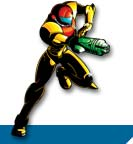
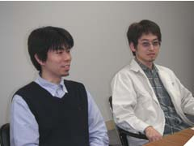
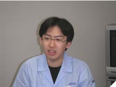
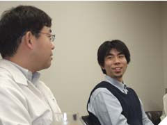
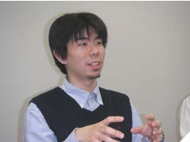
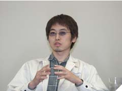
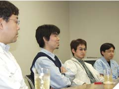

|
 |
|
|
|
|  |
今回は名作のリメイクということで、プレイしていて嬉しいできあがりを見ると「ここまで仕上げるのはきっと大変だったんだろうな」と思ってしまいます。きっと見えない苦労やエピソードがあったんでしょう。果たして今回はどんなお話しが飛び出すのでしょうか？ |
|
|
|
|
|
|
|
| N.O.M この作品を開発するまでの経緯を教えてください |
中田 前作(『メトロイド フュージョン』)が終わって、次は何をしようかと話していた時に、このできあがったシステムを活かして、もういちどメトロイド作りましょうよ、ということで、こちらのタイトルになりました。だいたいみんな同じこと考えてたみたいで、初代「メトロイド」のリメイクにプラスして追加エピソードという形で作ろうと。
森澤 システム自体はできあがっているので、まず全体のビジュアルイメージをどうしようか・・・ということになったんです。どんなグラフィックがいいだろうか、と。
中田 それを元にしてGBAへ移す作業を始めました。サムスの動きをつけていったり…。今回は『フュージョン』のサムスよりも俊敏な動きを意識して作りました。よりスピーディーに、というのを目指したんです。それからマップ構成は、初代のイメージはそのままにして、アイテムの位置も初代をやった人が「あ、そうそう」って思えるようにしてみたりと、意識的にやってます。
藤井 『フュージョン』を作ってきたノウハウを詰め込んで、さらに余分な所をカットして、追加要素を入れたらよりよいものができそうだったんですよ。僕は初代の『メトロイド』がリリースされた当時、すごく遊んだんです。好きなタイトルだったので、気持ちは入りました。 |
| N.O.M みなさん、初代「メトロイド」はよく遊んだんですか？ |
尾崎 僕は毎日やってました。日課のように１日１クリアー、という感じで(笑)。逆にマリオとかができない人間だったんですよね。一回のミスで死んでしまうような緊張感あるゲームが苦手で…。
藤井 僕はどうしてもクリアーできませんでした。できない所は友人に来てもらったりしたんですが、ある日するっと壁を抜けた時があったんです。それがものすごい衝撃的で。「壁を抜けるの!?」と。そのうちディスクシステムの電池が切れちゃって、苦労がパーになったりもしましたが(笑)。 |
| N.O.M 今回、特に意識したポイントはどこでしょうか。 |
森澤 グラフィックに関していえば、前作との差別化ですね。ディレクターの指示でアメコミタッチを意識して作りました。背景を例に上げると『フュージョン』では色数をできるだけ見せる様に描き込んでいましたが、『ゼロミッション』では使う色と使わない色をはっきりさせて、色数を制限したんです。黒色を多用してわざと暗い感じにしました。アメコミって黒い線が基調じゃないですか。だからそれをイメージした結果ああなりました。
中田 マップに関しては、前作『フュージョン』ではナビゲーションに従って進む一本道、今回は自由度を上げて、ある程度の装備がなくてもあちこちへ行けるようにというのを意識しました。だからハマリが出ないように、という部分で色々と神経を使って調整しました。
藤井 前回はちょっと手探りだった部分もありましたが、今回は意識して音質を上げるようにしました。効果音に関しては、全部を作り直しているんです。アメコミ調を意識…ということだったので、それも頭に入れて作っていました。リメイクということでボリュームはそれほどでもないかと思っていたんですが、とんでもない話でした(笑)。 |
|
|
| N.O.M １作目から続くコンセプトやイメージとはどういうものなんでしょう？ |
| 森澤 全体的なイメージは「シリアス」、だからメトロイドのキャラクターは「任天堂らしからぬキャラ」なのかな。サムスにしても大人の女性ですし、ストーリーもリアルでハードですよね。明るい感じではなく、少しダークな世界観を持つソフトなんじゃないでしょうか。 |
| N.O.M 長いあいだシリーズが支持される理由とはなんでしょうか。 |
尾崎 ストーリーのなかで積み上げたものがあって、クリアタイムが表示されたり結果が出たりしますが、それを含めて繰り返し遊んでもらえる所じゃないかなと思います。
森澤 ひとつにアイテム探しの要素があるんじゃないでしょうか。今回もラストでアイテム回収率というものが表示されるのですが、普通に探索してクリアーしてみると、実は50〜60％の回収率でしかないんです。それを100％にするために、またプレイして…という何度も挑戦したくなる面白さがあるんですよ。逆に最速のクリアタイムに拘ってプレイされる方も多いですね。ただクリアーするだけじゃなくて色々な楽しみ方が出来る...というのも支持される理由じゃないでしょうか。
中田 シリーズを通してのイメージって変わっていないんですけど、毎回新しいことにチャレンジしてるんですよね。そこをちゃんと見て頂けてるのかなと思います。今回の『ゼロミッション』では、後半パートはスーツを剥ぎ取られたサムスが活躍するんですが、逃げるか隠れるかくらいしかできないんですよね。それが今回の新要素でチャレンジでしたね。 |
| N.O.M 開発の最中に印象的なエピソードはありましたか？ |
藤井 特にはありませんが…僕のパソコンのハードディスクが壊れたくらいでしょうか。なんとか無事ではあったんですが、その時は頭が真っ白になりました(笑)。
尾崎 中田が盛り込む要素を色々とたくらんでいたらしくて、それをはねてもはねてもしつこくプログラムの方へ回してくるんですよ(笑)。あっちからがダメならこっちから…みたいな感じで。
中田 ちゃんとご機嫌は伺ってたんですけども。
尾崎 そのたくらみのひとつが、ファミコン版『メトロイド』を遊べるようにすることなんですが、その辺も押し通して入ったというか。でも、これってファミコンミニで１本買うことを考えればお得ですよね。 |
| N.O.M そう考えれば確かにお得ですね(笑)。 |
森澤 実は最初、ビジュアルイメージが違ったんですよ。初代を忠実にＡＧＢで再現したような感じで作られていたんですが、そうするとサムスも３頭身になって、動きもちょこまかしてるんです。みなさん忘れられてるかもしれませんが、ディスクシステムの頃はそういう感じだったんですよ。少しかわいらしくて、全てのデザインがそれに合わせた仕上がりだったんですが、NOA(Nintendo of America)から「それはやめて」と(笑)。
中田 『メトロイド』はリアル志向じゃないとダメだ、と言われました。やっぱり国外でもかなり売れるタイトルなので、NOAの意見は重要ですし。世界の購買層を見るとリアルの方がいいよね、ということになって路線変更したんです。
森澤 で、実際に作り変えてみて、やっぱりメトロイドの世界観はリアルな雰囲気が良く似合うなぁ、と再認識した部分もありました（笑） |
|
|
| N.O.M ディレクターの指示はどういったものだったんでしょう |
中田 細かいことは言われないんですが、後半部分のアイディアを出されました。それをどう実現して盛り込んでいくかという所で僕らはかなり試行錯誤しました。
森澤 ストーリーや見た目が変わり、新しい要素が入ることで世界観を壊していないか、という部分を重点的にチェックされました。でも、あとは比較的自由にやらせてもらったと思います。OKが出るかどうかのボーダーがあって、そこを外していると多分ダメなんだと思います。新しい要素であっても、全体のつじつまが合って、そこにプラスアルファの効果が期待できて、かつバランスが取れていれば大丈夫みたいですよ。 |
| N.O.M 作業を終えてのご感想はいかがですか？ |
藤井 初代をベースにと聞いてはいましたが、新要素が大幅に追加されたので、楽しみながら作業ができました。でも音をつける作業はいつも最後にかかってくるので、作業量も含めて追い込みが大変でしたね。
森澤 『フュージョン』を一緒に作っていた先輩達はベテランの方ばかりだったんですが、今回その人達が抜けられたので不安でした。作業の割り振りなんかも、できるパートは何でもやるという感じで進めていました。ゲーム画面を作りつつ、ロゴを作って、描いたものを皆で回して…という感じですかね。でも結果的に内容の濃いものに仕上げられたと思います。
中田 最初に想定していたやりたいことというのがいくつもあって、それを実現してもらおうとしても、これまではいつもできないことが多かったんです。でも今回はできるだけ早い時期にあちこちへ根回しをして、思っていることの半分くらいは実現できたかなと。そこは良かったと思います。あっ、「半分しか」なんて思わないで下さい、いつもは半分もできないんで、今回は上出来なんです（笑） |
| N.O.M ではユーザーへのメッセージをお願いします。 |
尾崎 初代『メトロイド』も遊べるので、お得感があります。シナリオのなかに追加された新しいパートを、ぜひ楽しんで遊んで下さい。そこでは"ザリガニ"（ゼーベス星人）に追いかけられるんですけど、楽しく追いかけられて下さい(笑)。
森澤 初代のファンはもちろん、新しくここから入るユーザーさんもぜひ手に取って楽しんで欲しいです。興味を持たれたら、ぜひプレイして下さい。
藤井 作り手がびっくりするくらい追加要素が盛りだくさんです。昔やったことがある人も新鮮に遊べると思います。楽しんで欲しいですね。
中田 これまでメトロイドシリーズに入れなかった人も、ここがチャンスだと思って遊んで欲しいです。メトロイドの原点がここにありますから。そして１回目をクリアーしたら次はタイムアタックをして、公式サイトでのイベントにも参加して下さいね。
『メトロイド ゼロミッション』公式サイト→http://metroid.jp/metroid_version2/ |
|